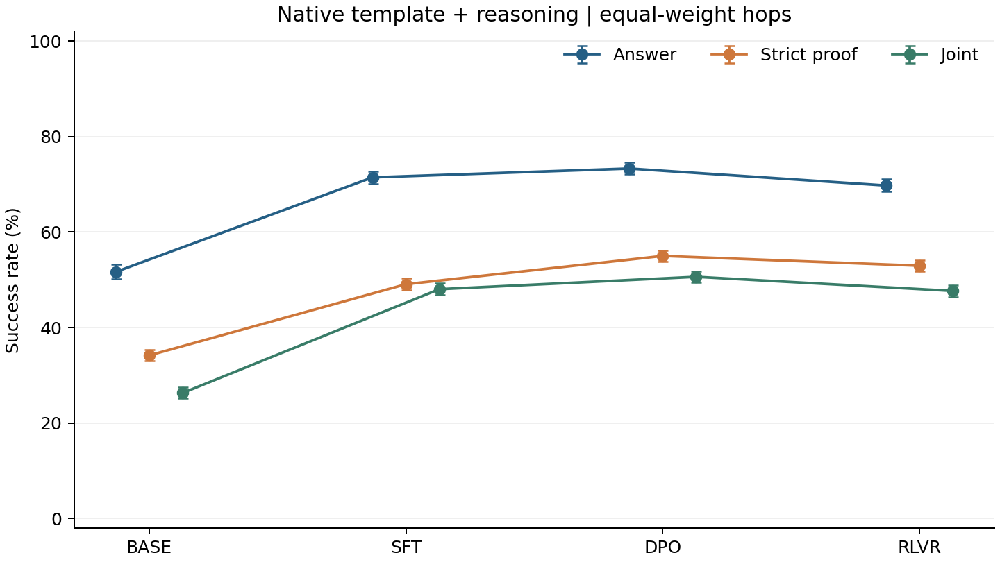
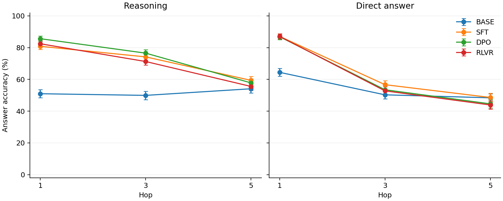

Tulu 3 four-stage behavior on PrOntoQA
Primary endpoint: native template, reasoning then answer, equal-weight 1 / 3 / 5-hop answer accuracy: BASE 51.67%, SFT 71.46%, DPO 73.31%, RLVR 69.75%.
4,320 formal questions; 60,480 physical generations; 69,120 logical views. Base's two template views share one physical output. Pilot observations are excluded.
Primary results
Brackets are 95% percentile stratified paired bootstrap intervals: 10,000 replicates, seed 20261007. Indices are shared across every checkpoint, template, condition and metric within each hop.
| Stage | Answer accuracy [95% CI] | Strict proof success [95% CI] | Joint answer and proof success [95% CI] |
|---|
| BASE | 51.67% [50.14%, 53.22%] | 34.17% [32.96%, 35.39%] | 26.30% [25.12%, 27.52%] |
| SFT | 71.46% [70.16%, 72.75%] | 49.07% [47.85%, 50.37%] | 48.03% [46.78%, 49.35%] |
| DPO | 73.31% [72.06%, 74.56%] | 55.00% [53.84%, 56.18%] | 50.62% [49.42%, 51.83%] |
| RLVR | 69.75% [68.43%, 71.04%] | 52.94% [51.76%, 54.12%] | 47.66% [46.41%, 48.89%] |

Native template + reasoning; equal-weight hops. SVG
| Comparison | Change, pp [95% CI] | Wrong→right / right→wrong | Exact McNemar p | Holm p |
|---|
| BASE → SFT | +19.79 [+18.06, +21.50] | 1263 / 408 | 1.50315e-101 | 4.50946e-101 |
| SFT → DPO | +1.85 [+0.35, +3.36] | 590 / 510 | 0.0171823 | 0.0171823 |
| DPO → RLVR | -3.56 [-4.51, -2.66] | 129 / 283 | 2.39489e-14 | 4.78978e-14 |
Two-sided exact McNemar tests apply only to these three primary adjacent-stage comparisons, with Holm correction in one family of three. Changes are later minus earlier stage. Other comparisons are descriptive secondary results.
Difficulty, response condition and template

Independent hop pools; these curves do not isolate reasoning depth. SVG
Accuracy by hop, condition and template
| Stage | Condition | Template | Hop | Accuracy [95% CI] |
|---|
| BASE | cot | native | 1 | 50.97% [48.40%, 53.61%] |
| BASE | cot | native | 3 | 49.93% [47.29%, 52.57%] |
| BASE | cot | native | 5 | 54.10% [51.53%, 56.74%] |
| BASE | cot | plain | 1 | 50.97% [48.40%, 53.61%] |
| BASE | cot | plain | 3 | 49.93% [47.29%, 52.57%] |
| BASE | cot | plain | 5 | 54.10% [51.53%, 56.74%] |
| BASE | direct | native | 1 | 64.44% [61.94%, 66.94%] |
| BASE | direct | native | 3 | 50.28% [47.71%, 52.92%] |
| BASE | direct | native | 5 | 48.40% [45.83%, 50.97%] |
| BASE | direct | plain | 1 | 64.44% [61.94%, 66.94%] |
| BASE | direct | plain | 3 | 50.28% [47.71%, 52.92%] |
| BASE | direct | plain | 5 | 48.40% [45.83%, 50.97%] |
| SFT | cot | native | 1 | 80.83% [78.82%, 82.85%] |
| SFT | cot | native | 3 | 74.17% [71.88%, 76.46%] |
| SFT | cot | native | 5 | 59.38% [56.88%, 61.88%] |
| SFT | cot | plain | 1 | 86.53% [84.79%, 88.26%] |
| SFT | cot | plain | 3 | 73.68% [71.39%, 75.97%] |
| SFT | cot | plain | 5 | 57.71% [55.14%, 60.28%] |
| SFT | direct | native | 1 | 87.08% [85.28%, 88.75%] |
| SFT | direct | native | 3 | 56.67% [54.10%, 59.24%] |
| SFT | direct | native | 5 | 48.61% [46.04%, 51.25%] |
| SFT | direct | plain | 1 | 88.19% [86.53%, 89.86%] |
| SFT | direct | plain | 3 | 59.03% [56.46%, 61.53%] |
| SFT | direct | plain | 5 | 50.14% [47.57%, 52.78%] |
| DPO | cot | native | 1 | 85.62% [83.82%, 87.36%] |
| DPO | cot | native | 3 | 76.53% [74.38%, 78.68%] |
| DPO | cot | native | 5 | 57.78% [55.21%, 60.35%] |
| DPO | cot | plain | 1 | 88.89% [87.22%, 90.49%] |
| DPO | cot | plain | 3 | 71.67% [69.31%, 73.96%] |
| DPO | cot | plain | 5 | 51.39% [48.75%, 54.03%] |
| DPO | direct | native | 1 | 86.88% [85.07%, 88.61%] |
| DPO | direct | native | 3 | 53.47% [50.90%, 56.04%] |
| DPO | direct | native | 5 | 44.58% [41.94%, 47.15%] |
| DPO | direct | plain | 1 | 89.38% [87.78%, 90.90%] |
| DPO | direct | plain | 3 | 54.79% [52.22%, 57.29%] |
| DPO | direct | plain | 5 | 46.11% [43.47%, 48.75%] |
| RLVR | cot | native | 1 | 82.43% [80.49%, 84.38%] |
| RLVR | cot | native | 3 | 71.25% [68.96%, 73.61%] |
| RLVR | cot | native | 5 | 55.56% [52.99%, 58.13%] |
| RLVR | cot | plain | 1 | 86.46% [84.65%, 88.19%] |
| RLVR | cot | plain | 3 | 67.08% [64.65%, 69.51%] |
| RLVR | cot | plain | 5 | 50.97% [48.33%, 53.61%] |
| RLVR | direct | native | 1 | 87.08% [85.35%, 88.75%] |
| RLVR | direct | native | 3 | 52.78% [50.21%, 55.28%] |
| RLVR | direct | native | 5 | 43.89% [41.25%, 46.46%] |
| RLVR | direct | plain | 1 | 88.82% [87.15%, 90.42%] |
| RLVR | direct | plain | 3 | 54.24% [51.67%, 56.74%] |
| RLVR | direct | plain | 5 | 45.00% [42.36%, 47.57%] |
Paired differences include adjacent stages, native minus plain, and reasoning minus direct. Label summaries and Stage transitions retain every group.
Failure modes and output length
| Stage | Condition | Template | Answer parse failure | Proof parse failure | Skip | Logic error | Truncation | Mean output tokens |
|---|
| BASE | cot | native | 0.00% | 0.42% | 22.31% | 46.55% | 0.00% | 32.4 |
| BASE | cot | plain | 0.00% | 0.42% | 22.31% | 46.55% | 0.00% | 32.4 |
| BASE | direct | native | 0.00% | N/A | N/A | N/A | 0.00% | 6.0 |
| BASE | direct | plain | 0.00% | N/A | N/A | N/A | 0.00% | 6.0 |
| SFT | cot | native | 0.00% | 0.25% | 18.38% | 34.63% | 0.00% | 33.8 |
| SFT | cot | plain | 0.00% | 0.16% | 20.95% | 36.78% | 0.00% | 31.7 |
| SFT | direct | native | 0.00% | N/A | N/A | N/A | 0.00% | 5.0 |
| SFT | direct | plain | 0.00% | N/A | N/A | N/A | 0.00% | 5.0 |
| DPO | cot | native | 0.00% | 0.21% | 20.30% | 25.97% | 0.00% | 33.2 |
| DPO | cot | plain | 0.00% | 0.07% | 23.52% | 28.06% | 0.00% | 29.9 |
| DPO | direct | native | 0.00% | N/A | N/A | N/A | 0.00% | 5.0 |
| DPO | direct | plain | 0.00% | N/A | N/A | N/A | 0.00% | 5.0 |
| RLVR | cot | native | 0.00% | 0.30% | 20.12% | 28.54% | 0.00% | 33.3 |
| RLVR | cot | plain | 0.00% | 0.21% | 23.38% | 30.19% | 0.00% | 30.0 |
| RLVR | direct | native | 0.00% | N/A | N/A | N/A | 0.00% | 5.0 |
| RLVR | direct | plain | 0.00% | N/A | N/A | N/A | 0.00% | 5.0 |
Failure flags overlap and must not be summed. A proof parse failure can cause downstream skip flags; those flags alone do not establish a true omission. Direct answers have no proof metrics. Diagnostics retain format compliance, stop counts, lengths and hop-specific rates.
Data and protocol
| Hop | Questions | True | False | Mean text characters | Mean rules |
|---|
| 1 | 1440 | 759 | 681 | 294.2 | 10.3 |
| 3 | 1440 | 737 | 703 | 389.9 | 14.3 |
| 5 | 1440 | 699 | 741 | 431.9 | 16.1 |
| Stage | Checkpoint | Fixed revision |
|---|
| BASE | meta-llama/Llama-3.1-8B | d04e592bb4f6aa9cfee91e2e20afa771667e1d4b |
| SFT | allenai/Llama-3.1-Tulu-3-8B-SFT | f2a0b46b0cfda21003c6141b1ff837b7e165524d |
| DPO | allenai/Llama-3.1-Tulu-3-8B-DPO | a7beb67e33ffd01cc87ac3b46cadc1000985b8db |
| RLVR | allenai/Llama-3.1-Tulu-3-8B | 666943798adbde0b1aff34626007e26986a3c107 |
Greedy BF16 inference without quantization or TF32; one response per physical condition. Four independent 3-hop demonstrations are shared, ordered True, False, True, False. Native prompts contain one user message and no extra system instruction. Plain prompts use the same body. Only the pilot's completeness criterion selects budgets, never correctness.
Reasoning 512 tokens, direct answer 32 tokens; batch size 4. Historical generation identity: a70ca1ca84c680f5b989a7c48d10ee9b5b30ef7589e20aed0681889a51b7d192.
Answers are parsed independently from proofs. A strict proof must parse every assertion, derive each new fact from premises or one valid Modus Ponens step, and reach the correct proposition. False items require the explicit negation of the query. Valid repetition and alternate paths are allowed; missing necessary steps and extra invalid assertions fail.
Downloads: Success summaries · Primary tests · Dataset summaries · Aggregate statistics · Provenance · Fixed formal corpus (external evidence)
Interpretation limits
- Results apply to these four fixed checkpoints and this evaluation protocol; stage differences are not causal effects of training methods.
- Hop strata were generated independently and cannot be paired by position; difficulty curves do not isolate reasoning depth.
- Intervals quantify item-sampling uncertainty, excluding demonstration selection and training randomness.
- Base native and plain views reference the same generation, not independent observations.
- All success rates use every item in the respective condition as their denominator; direct answers have no proof metrics.